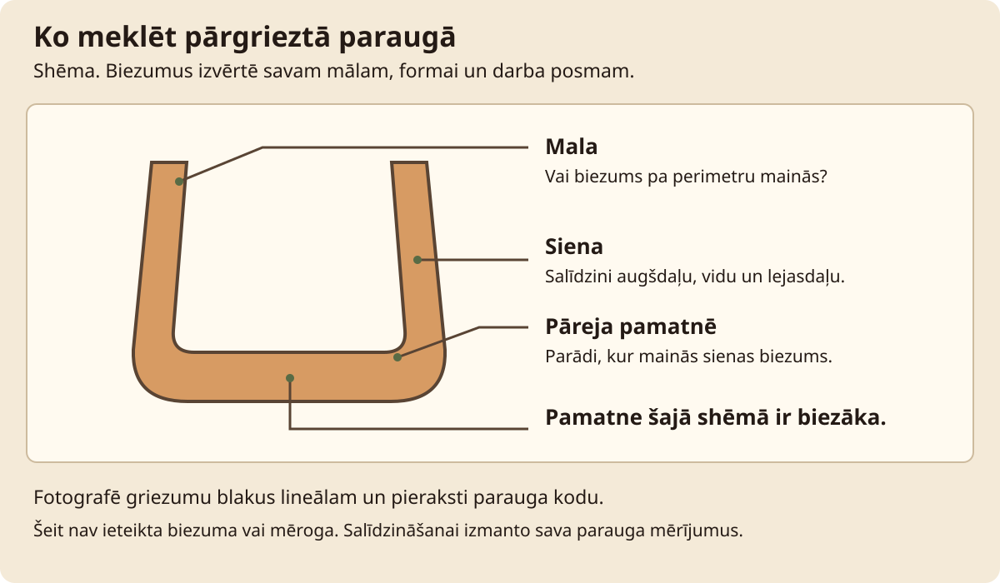

Virpošana · Stunda 3 no 6
Atvēršana un pamatnes pārbaude
Atver centrētu māla gabalu, izveido nelielu pamatni un pārbaudi to uz atsevišķa mācību parauga.
Stundas rezultāts. Atvērta forma un dokumentēts pamatnes šķērsgriezums.
Teksts un kadri sagatavoti izmēģinājumam. Norādītie laiki ir plānoti; darbnīcas izmēģinājums un video ieraksts vēl nav dokumentēti.
Pirms filmēšanas un prakses
Priekšzināšanas. Veikta centrēšanas pārbaude; sagatavotas divas nelielas vienāda māla porcijas.
Vienu paraugu A izmanto atvēršanai un pārgriešanai, otru B atstāj atkārtojumam. Iepriekš skicē paredzēto pamatnes profilu. Šajā vingrinājumā mērījuma mērķis ir novērot biezumu, ne noteikt universālu trauka izmēru.
| Rīks vai materiāls | Kam tas vajadzīgs |
|---|---|
| Virpa | Atvēršana. |
| Stieple ar rokturiem | Atsevišķā parauga pārgriešana. |
| Lineāls | Šķērsgriezuma foto mērogs. |
| Sūklis | Liekā ūdens savākšana. |
| Darba dēlis | Parauga apskate pie apturētas ierīces. |
| Paraugs | Sākuma stāvoklis | Izmantošana ainās |
|---|---|---|
| A | Centrēts māls | Atvēršana un šķērsgriezums. |
| B | Otra sagatavota porcija | Atkārtojums un turpmākais cilindrs. |
Pārbaudi pirms ieraksta
- Skats no augšas ļauj redzēt centru, netraucējot rokām.
- Stieple novietota ārpus kustīgās ripas zonas.
- A un B paraugu kodi redzami kadru sākumā.
- Mērījuma foto paredzēts lineāls un sānu gaisma.
Drošība šajā stundā
Mērīšanu un pārgriešanu veic pie pilnīgi apturētas virpas. Stiepli turi aiz rokturiem, neaptin ap pirkstiem. Rokas nevirzi griezuma ceļā. Māla atliekas savāc mitras.
Apstājies, ja: māls zaudē piestiprinājumu, plaukstas sāp vai parādās nekontrolējama deformācija. Apturi un sagatavo citu porciju.

Filmēšanas secība
Ainas un ieteicamais teksts
7 ainas · 4:00
Citāti ir pielāgojams pasniedzēja teksts. Pēc runas atstāj laiku darbības vērošanai. Ja kustība aizņem ilgāk, pagarini ainu un atjauno laika plānu.
-
1. Pamatnes profils
0:00-0:20 · 20 sAinas kods: rata-03-a01
- Kadrējums
- Papīra skice blakus paraugam A.
- Darbība
- Atzīmē atvēruma un pamatnes vietu. Pasaki, ka A tiks pārgriezts novērošanai.
Ieteicamais runājamais teksts
Šodien atvērsim mālu un apskatīsim pamatni. Vienu mācību paraugu beigās pārgriezīsim.
- Teksts ekrānā
- Paraugs A: pārbaudei
- Pārbaudes kadrs
- Skice atšķirta no faktiskā rezultāta.
- Pauze un montāža
- Parādi visu skici pirms tuvplāna.
-
2. Centrējuma atkārtojums
0:20-0:50 · 30 sAinas kods: rata-03-a02
- Kadrējums
- Tas pats sānskats kā centrēšanas stundā.
- Darbība
- Pārbaudi piestiprinājumu un sānu svārstību. Izvēlies kontrolējamu ātrumu un samitrini kontakta vietu.
Ieteicamais runājamais teksts
Pirms atvēršanas vēlreiz pārbaudu centrējumu. Ja māls joprojām met, vispirms atgriežos pie tā.
- Teksts ekrānā
- Pirms atvēršanas: pārbaudi centru
- Pārbaudes kadrs
- Paraugs rotē bez izteiktas sānu kustības.
- Pauze un montāža
- Paturi kadrā vairākus apgriezienus.
-
3. Atvērums centrā
0:50-1:35 · 45 sAinas kods: rata-03-a03
- Kadrējums
- Slīps skats no augšas, redzamas abas rokas.
- Darbība
- Ar atbalstītu roku pakāpeniski veido iedobi rotācijas centrā, otru roku turot ārpusē stabilitātei. Neizspied cauri līdz ripai.
Ieteicamais runājamais teksts
Atveru no centra un kustos pakāpeniski. Atstāšu pamatni, ko vēlāk varēsim apskatīt šķērsgriezumā.
- Teksts ekrānā
- Kustība pa centra asi
- Pārbaudes kadrs
- Atvērums paliek centrā.
- Pauze un montāža
- Parādi vienu pilnu atvēršanas kustību bez pārtraukuma.
-
4. Atvēruma paplašināšana
1:35-2:20 · 45 sAinas kods: rata-03-a04
- Kadrējums
- Sānskats ar redzamu iekšējo roku.
- Darbība
- Lēnām paplašini iedobi līdz iecerētajam pamatnes platumam, saglabājot ārējo atbalstu. Izlīdzini pamatnes pāreju, savāc uzkrāto ūdeni.
Ieteicamais runājamais teksts
Paplašinu atvērumu līdz skicē paredzētajai formai. Vēroju arī pāreju no pamatnes uz sienu.
- Teksts ekrānā
- Pamatne un pāreja uz sienu
- Pārbaudes kadrs
- Iekšpusē nav aizsedzošas ūdens peļķes.
- Pauze un montāža
- Pauzi atstāj pēc ūdens savākšanas.
-
5. Parauga šķērsgriezums
2:20-3:00 · 40 sAinas kods: rata-03-a05
- Kadrējums
- Apturēta virpa vai paraugs uz dēļa; abas rokas redzamas.
- Darbība
- Pilnīgi apturi ierīci. Ar rokturos turētu stiepli pārgriez mācību paraugu un atver šķērsgriezumu, rokas turot ārpus griezuma ceļa.
Ieteicamais runājamais teksts
Virpa ir apturēta. Tagad šajā mācību paraugā varam apskatīt, cik māla palicis pamatnē.
- Teksts ekrānā
- Pārbaude tikai apturētā stāvoklī
- Pārbaudes kadrs
- Kadrā redzama pamatne un sienas sākums.
- Pauze un montāža
- Drošības stāvokli parādi pirms griezuma, neizlaid montāžā.
-
6. Mērījuma pieraksts
3:00-3:35 · 35 sAinas kods: rata-03-a06
- Kadrējums
- Šķērsgriezums ar lineālu vienā plaknē.
- Darbība
- Salīdzini centru, pamatnes malu un pāreju uz sienu. Pieraksti novērotās atšķirības un to, vai paredzēta vēlākā apvirpošana.
Ieteicamais runājamais teksts
Šajā paraugā redzams biezāks posms. Nākamajā mēģinājumā pārbaudīšu tieši šo vietu.
- Teksts ekrānā
- Mērījums attiecas uz šo paraugu
- Pārbaudes kadrs
- Foto ar mērogu un parauga kodu.
- Pauze un montāža
- Uzrakstu novieto ārpus griezuma kontūras.
-
7. Atkārtojuma uzdevums
3:35-4:00 · 25 sAinas kods: rata-03-a07
- Kadrējums
- Darba lapa un porcija B.
- Darbība
- Norādi vienu labojumu un atkārto atvēršanu uz B. Novērojumu ieraksti arī tad, ja rezultāts neatbilst skicei.
Ieteicamais runājamais teksts
Tagad atver otru porciju. Salīdzini pamatni ar iepriekšējo mēģinājumu un pieraksti, ko mainīji.
- Teksts ekrānā
- Tālāk: sienu pacelšana
- Pārbaudes kadrs
- Izvēlēta viena nākamā izmaiņa.
- Pauze un montāža
- Noslēdz ar darba lapas tuvplānu.
Ainu atzīmes saglabājas šajā pārlūkā, ja pieejama lokālā glabāšana. Tās atzīmē ieraksta progresu, nevis tehniskās drošības pārbaudi.
Prakse darbnīcā
Pamatuzdevums. Atvērta forma un dokumentēts pamatnes šķērsgriezums.
| Darba posms | Plānotais laiks |
|---|---|
| Divu porciju sagatavošana un centrēšana | 15 min |
| Atvēršanas mēģinājumi | 20 min |
| Mācību parauga pārgriešana un mērījumi | 10 min |
| Mitrā uzkopšana | 10 min |
| Pieraksts | 5 min |
| Kopā | 60 min |
Filmēšana. Plāno atsevišķu 60-90 minūšu ieraksta sesiju ar sagatavotiem paraugiem. Faktisko laiku pieraksti pēc izmēģinājuma.
Gaidīšana. Pārgrieztā mitrā parauga novērošanai nav jāgaida žūšana. Turpinājumam vajadzīgs atsevišķs vesels paraugs.
Ja paliek laiks. Uzskicē novēroto šķērsgriezumu un salīdzini to ar sākotnējo ieceri.
Ja jāpārtrauc. Apturi ierīci, savāc pārgrieztā māla daļas un saglabā foto. Veselo B paraugu turpini tikai piemērotā mitruma stadijā.
Ko darīt, ja neizdodas
| Novērotā pazīme | Iespējamais iemesls | Nākamā darbība |
|---|---|---|
| Atvērums aiziet uz sāniem | Spiediens ārpus centra vai zudis centrējums | Apturi mēģinājumu un pārbaudi sākuma centrējumu citā porcijā. |
| Pamatnē caurums | Atvēršana pārāk dziļa konkrētajai porcijai | Fiksē šķērsgriezumu un nākamo mēģinājumu sāc ar citu porciju. |
| Pamatne nevienmērīga | Paplašinot mainīts rokas augstums | Salīdzini šķērsgriezuma vietas, nākamreiz vēro rokas kustības augstumu. |
Drukājama darba lapa · Virpošana 03
Atvēršana un pamatnes pārbaude: pieraksti
Datums: ____________________ Darba / māla kods: ____________________
Mērķis. Atvērta forma un dokumentēts pamatnes šķērsgriezums.
Pirms uzdevuma. Mērīšanu un pārgriešanu veic pie pilnīgi apturētas virpas. Stiepli turi aiz rokturiem, neaptin ap pirkstiem. Rokas nevirzi griezuma ceļā. Māla atliekas savāc mitras.
| Mēģinājums / pārbaude | Sākuma apstākļi | Redzamais rezultāts | Nākamā izmaiņa |
|---|---|---|---|
| A | |||
| B | |||
| C |
Ko pierakstīt darbnīcas žurnālā
- Porcijas masa un sākuma centrējums.
- Pamatnes biezuma atšķirības šķērsgriezumā.
- Vai turpmāk paredzēta apvirpošana.
- Foto ar parauga kodu un mērogu.
Viena nākamā izmaiņa:
Faktiskais darba laiks un pieredzes līmenis:
Pārbaudītais rezultāts un neatbildētie jautājumi:
Palīgmateriāli šai stundai
- Māla centrēšana uz podnieka virpas
- Pirmā cilindriskā forma: treniņa metode
- Kā kontrolēt sienas biezumu

Pārbaudītie uzziņas materiāli
Avoti pārskatīti 10.10.2026. Tehniskās norādes piemēro attiecīgajam procesam un konkrētajai iekārtai. Ārvalstu prasības nav Latvijas normatīvu aizstājējs.
Izmēģinājuma un montāžas pieraksts
Scenārija redakcija: Praktiskais izmēģinājums: vēl nav dokumentēts. Aizpildi tabulu pēc faktiskā mēģinājuma un labo ainu laikus.
| Ainas kods / dublis | Izmantojamais fragments | Kas jāprecizē |
|---|---|---|
| rata-03-a___ | ________________ | ________________ |
| rata-03-a___ | ________________ | ________________ |